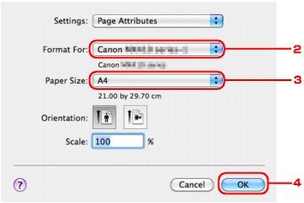
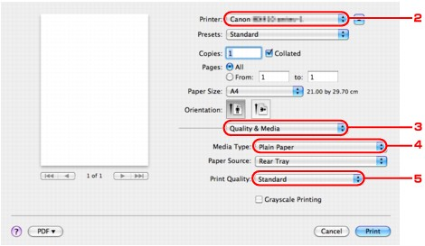

When using Bluetooth communication, also refer to the computer's instruction manual.
When printing from a Bluetooth compliant device other than a computer, see Printing with Bluetooth Compliant Devices other than a Computer.
 Note
Note-
Depending on your application software, operations may differ. For details, refer to your software application's instruction manual.
The steps described in this section are for printing in Mac OS X v.10.6.x. -
Bluetooth communication distance: Approx. 33 ft./10 m in normal environment.
The distance may vary depending on the radio conditions or the communication equipment.
-
Turn on the printer and load paper.
-
Create a document or open a file to print using an appropriate application software.
-
Select the page size.
-
Select Page Setup on the application software's File menu.
The Page Setup dialog opens.
-
Select the printer to which you attached the Bluetooth unit such as "Canon XXX-X" from Format for.
-
Select the page size of the loaded paper from Paper Size.
-
Click OK.
Note-
The registered printer is displayed as "Canon XXX-X".
-
"X" is a device name or a digit. The number of digits may differ depending on the printer.
-
For more information about how to use the MP Drivers functions, refer to Various Printing Methods.
-
-
-
Specify the required settings.
-
Select Print on the application software's File menu.
The Print dialog opens.
-
Select the printer to which you attached the Bluetooth unit such as "Canon XXX-X" from Printer.
-
Select Quality & Media in the popup menu.
-
Select the media type of the loaded paper in Media Type.
-
Select the print mode appropriate to your document from Print Quality.

-
-
Click Print to print the document.
Printing begins.
Note-
Click the printer icon in the Dock to display the list of print jobs in progress.
To cancel a print job in progress, select the desired document in the Name list and click Delete. To temporarily stop a job in progress, click Hold. To temporarily stop all the jobs in the list, click Pause Printer. In Mac OS X v.10.4.11, click Stop Jobs to stop all the jobs in the list.
After printing is canceled, a sheet of paper may be ejected with no printing results.
-